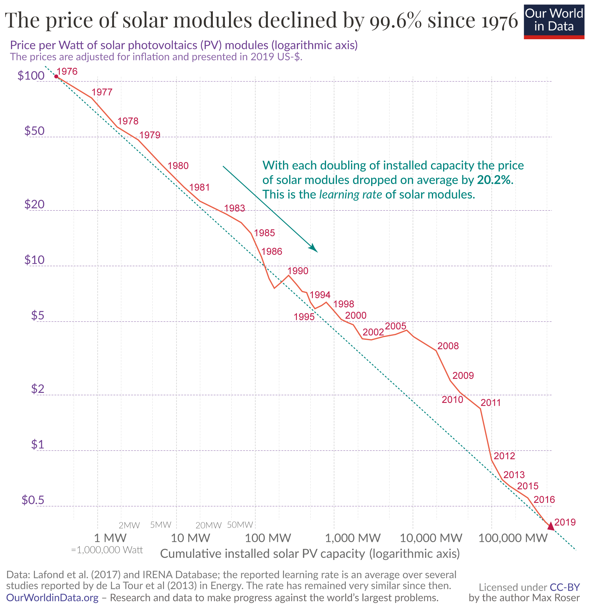
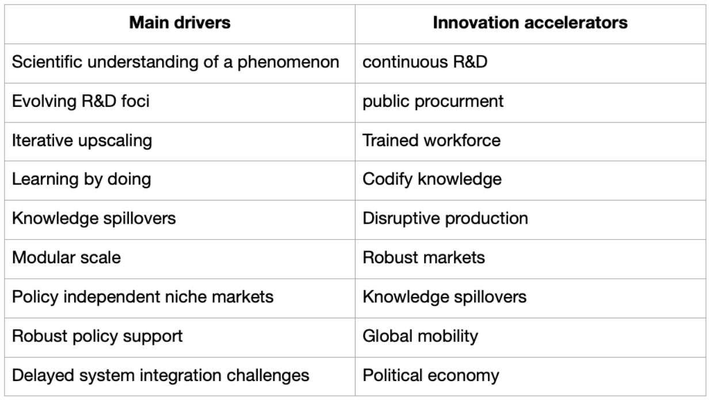

How solar energy became cheap
By Neil Hacker
This is a summary of How solar energy became cheap by Greg Nemet, it's on this blog as the story of solar
has many lessons we can apply to CDR as I'm sure you'll pick up. If you did want to jump straight to the part that talks
directly about the lessons we could apply to DAC you can click here.
Technology has a number of impressive stories of progress but few rival the story of solar photovoltaics (PV). From costing ＄300,000 for a mWh in 1957 costs have fallen on average 14% a year leading to current costs in sunny places to be as low as ＄17 per mWh, or in other words the world’s cheapest electricity.

Solar has achieved this despite competing in maybe the most commoditized market in the world, electricity, and when it started its costs were far far above those of its competition like oil or coal.
For this reason solar holds the story of how new technologies can find their place bit by bit and, through the actions of governments and consumers all over the world, push forward until they become a world leader. This is a story we will likely need to repeat over the coming decades with new types of technologies, like carbon removal, and this book helps shine a light on the blueprint of how to do it.
The book
“How solar energy became cheap” is an attempt to answer one fundamental question and then addresses three others. The main focus is, not surprisingly, 'how did solar energy become so cheap?', along the path though Greg Nemet also looks at why it took so long, how it could have moved faster and how this model could be applied to other technologies.
With these answers we can get a picture of one of the most remarkable technological scale-ups in history, and then hopefully do even better in the future.
It's worth noting this is not the lightest reading of your life. The book somewhat reminded me of Governing the Commons by Elinor Ostrom. It doesn't present any "one quick thing" that solar did but rather, similarly to Governing the Commons, it gives a framework that is multifaceted and interwoven, just like reality. It is probably the kind of book you would want to refer back to in its original form rather than any brief summary of. And yet here I go.
The story of how solar energy became cheap presented is one of three overlapping narratives. The first concerns the change in dominance between countries as to which ones consumed and produced the most solar PV. The second concerns the varying policies used over the course of the current lifetime of solar. The third concerns structural aspects to do solar technology specifically. The book has gone with a more country, and therefore roughly chronological, narrative.
If I was to summarise the main components in a, somewhat long, sentence it would be that solar PV modules benefited from being able to work in a number of niche markets, at many stages spurred on by government demand side policies and that the standardisation of the underlying module and the physical principles it is built on made them particularly amenable to economies of scale and learning by doing helping them to radically fall in cost as installed capacity increased.
The book has two main lists covering spelling out a number of factors that helped in this process. One covers the main drivers of how solar became cheap and the other covers things that could accelerate technologies like solar. We won't look at all the points on either list but I thought it would be unfair not to at least include them in full so here they are below:

I'm going to focus on a few of the aspects the book touches on in this summary rather than take you through the same kind of chronological story it presents. Instead, I'm going to roughly separate things out into the role of technology, the role of governments, and the role of markets.
Technology
The first Solar cell was created in Bell Labs in 1954 and used principles dating back to Einstein and the photoelectric effect, it cost on the order of ＄300,000. Since then, as mentioned above, it cost ＄300,000 for a mWh and now costs as little as ＄17 per mWh. The obvious thing to ask is what changed in the technology between then and now? Broadly there are two things you can do to make a source of energy cheaper, you can make it more efficient and you can make the unit at a lower cost. Both happened with solar. Neither are really the direct subjects of the book.
This is because if asked what actually changed technology wise you would get answers like the electrical contacts were moved inside the semiconductor material so they weren't blocking light at top of the cell, a bifacial design was adopted so solar panels could absorb light from the front and the back, the silicon wafers were made thinner so less material was used, automation was introduced reducing the labour costs of assembly.
Mostly speaking, except the automation point, these are all incredibly specific to solar. They do point to how the fall in prices was not "one big thing" but a series of incremental improvements. What we really care about, at least here, is not so much what the incremental improvements were but rather the conditions that enabled them to even be discovered and capitalised on in the first place. Individual improvements are largely specific to their technologies, the systems that enable them are largely not.
Solar did have a few properties though that made it specifically amenable to being improved upon, and hence made cheaper. The first somewhat amazing property of the progression of solar PV is that the actual technology used has to a large extent been remarkably stable.
Crystallised silicon was used in this first demonstration cell and still maintains over a 90% share of all solar PV modules made today. This has had a few beneficial effects. The first is that the standardisation has meant that continual progress has been able to be made with any R&D able to spill out to eventually benefit almost all of the industry. The second is that it has allowed for a number of knowledge spillovers from the computer industry, again helping to speed up the improvements in solar.
Another great benefit of the technology is that it can exist on a vast array of different scales. You can use tiny solar cells to power a calculator or you can have a whole farm and generate gigawatts of power. This has enabled solar to gradually expand from more and more niche markets to being able to compete as a full scale grid utility energy provider. Related to this is that it has meant that solar has been able to be adopted by individual households, communities, or utility companies. Each has been crucial at different stages to helping solar become cheaper. Just to push on how odd this is in the energy space it would seem crazy for almost any other energy source to be able to power just a single house, a watch, or a city. Contrast this with something like a coal power plant where you roughly need the entire system and infrastructure in one go.
The benefits of this modularity cannot be overstated. Modularity is one of the main reasons for solar's ability to exist along so many scales. While you can make pretty small individual cells once you want more than a certain amount of power you need to string together multiple cells, making one giant plate of silicon is as you can imagine likely not the best way to go bigger.
Probably the main benefit though is that modularity means standardisation and scale. There are currently around 8,500 coal power plants in the world. Since the first solar cell there have been around 4bn panels and 100bn solar cells created.
This is an astoundingly large difference and means the production of solar cells can be, and has been, incredibly automated. In fact the assembly of solar cells became so automated that most of the profit margins flowed upstream to the machine part makers rather than the solar cell makers. If you make 4bn versions of a product that has been iterating from basically the same core design for 60 years you will get a lot of standardisation, a lot of economies of scale, and a lot of opportunities for learning by doing.
While the sheer scale effect of manufacturing does not by itself constitute technological progress it is the medium in which we can experiment and iterate on designs which have ultimately led to such a large fall in prices.
Governments
As I've mentioned in many ways solar was born into one of the most hostile environments a technology could exist in. It produced a pure commodity, electricity, at a time when the alternatives, fossil fuels, were vastly cheaper and easier to produce. We'll look later at the market aspects that helped solar grow but one of the indisputable narratives of the book is the extreme importance of various governments and their policies around the world.
One thing that was striking about government support for solar is there really isn't one country we can credit with bringing it to where it is today, unlike say the internet which by and large the USA can take credit for. The book takes us through four countries efforts over the past 60 years, we start with research funding and early procurement from the USA, we then transition to more procurement programs and initial supply funding from the Japanese government, this is followed by you guessed it more procurement from the German government, and finally we move to the Chinese governments support both on the demand side but also at scaling solar to where it is today.
Each country is given a chapter in the original book, here though we will look at things a bit more thematically going first over research funding, then demand side policies and finally supply side ones weaving between countries as we go.
Before we dive into these though there is a concept Nemet brings up which will be familiar to some, policy windows. Policy windows occur when there is a confluence of public support, and political willingness to move on a particular policy. Typically these tend to be catalysed by either an upwelling of support for an opposition party, as happened in Germany, or a large discrete event that catalyses incumbents in a new direction, as happened in America after the 1973 oil shock.
Solar energy has benefited multiple times from taking advantage of these windows but one of the core lessons of the book is that if we want to recreate this process with other technologies, and faster, we have to either be more offensive taking advantage of these windows, find ways to create them, or find ways to push on regardless.
R&D
Back to our three broad government roles, starting with R&D funding. When solar got started it was expensive and not very good, this presented a challenge to those who may have wanted solar to get cheaper and better, who will pay for this? One answer we'll come to below is niche markets, but the other is general government sponsored R&D funding and the majority of this, especially in the early days, came from the USA.
This is not wholly surprising, solar first found usage in satellites with NASA so the government had a vested interest in seeing it researched and improved. That being said the US government was largely dismissive of PV technology as an option for large scale energy provision. In fact Nixon tried to create Project Independence in response to the oil shocks, or in his words:
"Let us set as our national goal, in the spirit of Apollo, with the determination of the Manhattan Project, that by the end of this decade we will have developed the potential to meet our own energy needs without depending on any foreign energy sources"
A lofty goal and one that was backed, initially, by $10bn of energy R&D spending. As I said though this isn't really a victory story for solar as only around 0.8% of this was for solar and most of that was for heating rather than PV. PV was not actually even seen as part of the long term US response to the energy crisis, largely this was the role of nuclear. (How we have strayed from the golden age of nuclear optimism)
But the point remains, early US funding of Solar R&D was crucial to help a nascent technology emerge into the world. Nemet also mentions how R&D spending was a driving force behind managing to keep tacit knowledge alive throughout solar's 60 year history. As an industry it went through many booms and busts, especially in terms of private interest. Each bust risked having engineers and scientists move to other industries with better prospects, or even any funding at all, and thus take their tacit knowledge with them. Government R&D helped bridge these gaps.
Demand side interventions
The governments didn't just fund R&D they were also either direct buyers or created policies that stimulated larger consumer demand to spur usage. Focussing on the second of these all four of the main countries in the book have had some sort of rooftop solar program. These include the first ever demand pull program by the USA, the flat plate solar array project (FSA) and block buy program in the 1970's, Japan's METI rooftop solar subsidy program starting in the 90's, and Germany's EEG legislation.
Each of these schemes built on previous examples and each were fantastically effective. They're worth reading about in more depth but some of the key points for each of these schemes are below:
FSA
This was the world's first demand pull program for PV and was very ambitious, wanting to make PV a globally competitive form of energy by the mid 1980's, vs the mid 2000's we actually saw, or maybe even up until today in some people's view. It was not surprisingly also very large and accounted for 17% of all global PV purchases from 1976-81.
Being the first program it had to overcome some challenges that later schemes didn't have to contend with to the same degree. Namely solar was new and expensive, how can you both create a demand commitment without reducing the incentive for the producing firms to continue to innovate? As an aside, questions like this one are crucial for many nascent climate technologies including technological carbon removal.
The solution was to purchase solar PV in 5 blocks, each block would have a pre-committed price producers would get but each block would be increasingly demanding for manufacturing specifications, things like cost, efficiency, life expectancy.
The FSA was a massive success and was even described by congress as one of the best managed projects ever undertaken.
 METI rooftop solar program
METI rooftop solar program
Japan in the 90's wanted to encourage increased use of solar by individual households but this ran up against one of the other main issues solar has faced, and currently faces in more developing parts of the world, upfront capital costs.
Even if it is cheaper over the lifetime of having solar, if users are paying for their own panels then they face a pretty hefty upfront capital cost. Not only that but if they don't use the energy coming from the panels then this is basically wasted even though it has clear value.
Japan approached this from two fronts, it created a subsidy program and supported this with net metering. Net metering means energy installed panels create that isn't used by a household can be sent to the grid with the household getting paid a certain rate for it.
There were some pretty hefty challenges though. There was no precedent for providing a subsidy to individual residences, the finance ministry was initially dismissive of subsidy programs and even with the subsidy the scheme still relied on individual households being willing to invest thousands of dollars upfront.
To incentivise adoption METI created a rebate scheme that initially provided a cash grant of 50% between 1994-96 then 30% between 1997-99 then a fixed yen per watt which also decreased over time. This notion of declining rebates was one of their biggest policy innovations and by 2000 Japan was the largest PV market in the world. All of this increased demand helped solar scale and it saw its price fall by over a factor of 3 during the rooftop solar program.
Germany’s EEG
Germany's Renewable Energy Sources Act (or Erneuerbare-Energien-Gesetz aka EEG), passed in 2000, was the largest government funded solar subsidy program ever, committing more than €200bn to support the adoption of over 30GW of PV. The program was truly huge and supported half of all global PV installations between 2004-10.
This massive subsidy and following scale up paved the way for commercial solar producers to actually gain the interest of VCs as well as Wall St. German machine part expertise took full advantage and by 2004 they were selling "turnkey" solutions to producers that could be integrated to form production lines. While German PV module manufacturing ended up fading it remained the world leader in the assembly line parts for far far longer.
The EEG didn't just help German solar capacity grow, or even world capacity grow, but also provided a blueprint for other countries to then adopt to make even larger gains in the future. It firstly showed that these kinds of demand side approaches could have much greater effectiveness than most people believed and, secondly, it provided the specific frameworks for other countries to go and adopt to do the same. This includes features like the feed in tariffs which were then copied in Spain, Italy, and then later on Asia and Africa.
The EEG was so immensely successful it has even been called 'Germany's gift to the world' for the reductions in solar prices associated with it. From its inception in 2000 to its decline in 2012 the worldwide market for PV increased more than 30 times while prices of PV modules dropped to 16% of their previous prices.
Markets
Governments often helped stimulate demand and funded early research but before solar could even be considered for rooftop programs it still needed a market of some variety to survive and grow in.
Niche markets
Nemet talks about the demand curve of niches. Starting with the first PV cells on satellites to navigation aids for offshore oil to calculators and small toys solar has been able to gradually occupy markets that have an above average willingness to pay for electricity. Be it because traditional sources can't reach it easily, i.e offshore oil rigs, or because traditional sources simply don't have the ability to operate on many orders of magnitude of different scales, i.e you can't put a coal power plant on a calculator.
These niche markets have had a number of benefits. The first is that as you fill capacity in one market that has reliably reduced the cost of solar energy, this then means it is now cheap enough to be seriously considered for other, likely larger, markets. This is the demand curve Nemet talks about where you get a virtuous cycle of price decreases leading to capacity increases leading to price decreases. Given how far away solar started in terms of cost from traditional forms of energy, hopping from one niche to the next was the only viable way to bring the costs down.
The other main benefit is that these niches are broadly independent from policy. This had a few outcomes. The first is that if you are selling into a market that just simply wants to buy your product you have a level of security of cash flows that relying on any political entity may not grant you. The second is that given the diverse nature of these markets it leads to a far more distributed decision making framework for how solar should be advanced. It didn't matter if the USA government turned its back on solar if Japanese companies saw the benefit of it for some new type of product.
The importance of these markets really cannot be overstated. Government's can, and will, only spend so much. At the end of the day you will almost always need to tap into private capital flows if you truly want to scale something from basically nothing to a real chunk of global energy.
Chinese markets
BY 2017 China produced 70% of all of the world's PV having scaled up domestic production by over 500x in the preceding 17 years. China is largely the reason we have such large scale mass production of solar PV today. They were the final step going from technology push funding, to niche markets, to demand pull to bring usage up and finally landing at large scale consumer and utility demand.
Production was initially catalysed by the German Feed in Tariff scheme in the mid 2000's. Initially there was a small solar market in China but their lower labour costs, and competence in scaling quickly, gave them a huge comparative advantage early on to meet the surge in demand coming from Germany. This labour cost advantage dwindled as the process became more and more automated.
China, however, had more experience with commodity type markets, where margins were thin and scale was everything, than almost any other country in the world and so was able to adapt to these market conditions quickly. Spurring the cost reductions and thin profit margins was the fact that production was highly competitive between firms, with the largest Chinese firm never reaching above a 10% market share, vs around 28% for Japan's once top producer Sharp.
This is not to say the unfettered free market was at play in China however. "New energy" became a strategic industry in the country's 12th Ten-Year Plan, and many municipalities were known to co-sign loans reducing repayment risks for banks. In one instance a Chinese colonel virtually commandeered a $6m investment from five companies the army de facto controlled and invested it in Suntech.
This was a dramatic period for solar and particularly Chinese solar manufacturing. Markets grew enormously, at one point 4x in a single year, and many supply chain issues had to be sorted out rapidly, like creating a poly-silicon industry from scratch when Russian supplies couldn't keep up.
The 2008 financial crisis hit solar hard. Solar production has a lot of upfront costs before you get any electricity out of it and so is very sensitive to the amount of commercial lending available. Suntech ended up folding, not entirely because of solar production though there was massive fraud at a subsidiary they had an 80% stake in, as did many other companies. However the domestic government was now willing to really support the industry.
In 2009-10 the Chinese Development Bank provided $30bn worth of lines of credit to PV manufacturers and China instituted its own Feed in Tariff boosting domestic markets and by 2013 China was not just the largest producer of PV in the world it was the biggest market for PV as well.
Summarising all of the above the above, solar has received significant direct government funding, especially early on. This helped get it to the stage where it could be used for any commercial purpose, which were initially small niche markets with high willingness to pay. Using the demand from these markets though solar was able to increase its production, and given how modular the technology was this meant creating many many units, an ideal situation for technological learning. The real capacity boosts largely came from government sponsored demand stimuluses in the form of subsidy programs which helped pull production into the billions of units, most of which is produced by Chinese firms today.
Why did it take so long and how could it have been sped up?
In many ways getting from nothing to where solar is today in 60 years is an incredibly impressive feat. Over the last 30 years solar capacity has scaled at an average rate of 30% a year and prices have fallen by around 14% a year. These are both massive effects when you draw them out over such a timescale and very few technologies can claim to have such sustained and massive scaling as solar. And yet there are many reasons to think that solar could have moved faster.
If we just look at the USA, Reagan basically bodied the DoE and coupled with Saudi Arabia flooding the oil market in 1985 this led to a 20 year blow for alternative energies. There are other reasons to think things could have been sped up as well. We talked earlier about Germany's EEG scheme. Well this largely only came about because a policy window opened up after two decades of advocacy coalition and developing new organisations allowing the Green party to take control in 1998. Also a huge part of Germany's push for solar was premised on what was/is a borderline hatred for nuclear.
So from the government side of things we have the USA largely scaling down funding for a sustained period early on in solar's journey and we have large scale policy in Germany having to wait decades for a Green party to come to power. It is hard to think solar couldn't have moved faster if these had gone differently.
There was also the issue of entrenched interests. Traditional utility companies lobbied time and time again against the expansion of solar. It was a direct competitor to what they were offering and also the idea of homeowners being able to get paid for electricity they created through net metering schemes ate further into their dominance.
Typically these attacks came through campaigns about how solar was not reliable enough or would never be cheap enough. On the face these seem pretty reasonable but they turned out to be incredibly damaging to solar’s political support and thus the speed at which it could scale.
Broadly the question of how PV could have been accelerated comes down to 1) more of what led it to scale so quickly 2) less of the things that slowed it down. I know a truly eye opening account there by me.
It is tricky to go beyond the above generalisations because doing so for too long quickly leads you into worlds of intense counterfactualization. How could solar have been accelerated, well maybe if Saudi Arabia didn't have so much oil and didn't flood the market in the 1980's and nuclear reactors weren't seen as a viable technology then the US would have had more of an incentive to fund solar development….you get the idea.
It is worth considering which things may have been more likely to swing one way or another, or at least more so than "Saudi Arabia having less oil". For example, Reagan massively reducing the Department of Energy's is clearly something that we can learn from and hopefully incentivise countries like the US to maintain funding for more frontier energy and climate solutions. On this front things don't seem terrible, ARPA-E was established in the recent past and there is a new Office of Fossil Energy and Carbon Management which has been given a larger mandate to fund carbon removal schemes.
Another, maybe wistfully hopeful, point could well be to have a system that is less beholden to the lobbying interests of large companies, and in this case energy suppliers. This is a bit like saying maybe we should have a government system that works better so to be more concrete, concerns from big companies about emerging socially beneficial technologies should maybe have less credence if it looks like these technologies have the potential to be useful in the future even if there are some concerns over things like cost today.
As a summary solar was slowed down mainly by unstable and patchy funding and entrenched interests of incumbents, being cognisant of these for future innovations, while potentially very difficult to act on, would still be useful.
How can the model be applied elsewhere - DAC example
One clear question you might have is, "this all sounds great, solar had done a historically fantastic job but also it seems like it could have been done faster. Where can we go and use this model today?"
Luckily Greg Nemet had the exact same thoughts as you wise and curious reader and looked both at the types of technologies that would benefit the most from the model solar followed and two specific instantiations of what this could look like.
Nemet describes four different types of technologies, with historical innovation models and a climate tech that would likely have a similar scale up path
- High-tech, iterative, disruptive i.e solar PV and DAC
- Low-tech, small, distributed i.e the green revolution and soils
- Large, system integration intensive i.e chemical plants and BECCS
- General purpose i.e the CPU and AI
He notes that the story of how solar energy got cheap is most likely to be helpful for the first type of technologies. These are ones where we will likely have a very high volume of units which can consist of a relatively standardised design. Still the utility of managing to recreate this kind of story for even just these kinds of technologies is huge.
As a word of warning the two specific cases Nemet looks at are direct air capture (DAC) and small nuclear reactors. I am not going to be going over either of these fully and in this summary I am just going to touch on DAC.
Direct air capture is the technology of using some system, usually very large fans, to blow air over some material that binds with the CO₂ in the atmosphere. You then strip the CO₂ from the binding material and concentrate it, after which you can do a few things with it. You can use it for goods and services, i.e drinks or greenhouses, it can be sequestered underground in mineral formations or old oil wells, it can be used as an input to make electro-fuels. We have a lot of uses for CO₂ basically, the main one DAC will probably be for though is to catch CO₂ for permanent sequestration to help meet net-zero targets.
DAC is very very expensive at the moment, around ＄500-600 a tonne. While it is not at all an apples to apples comparison due to differences in permanence and quality things like afforestation are currently selling for around ＄20-30 a tonne. Also in total DAC has currently removed maybe 10,000 tonnes optimistically in its entire history.
- To a large extent many DAC systems can be standardised and then it is about building many of the same type of module over and over.
- It looks likely that DAC will have the potential to scale down its costs as we ramp up production.
- DAC has also had a history of moving through niche markets, although these have been harder to come by than solar.
Expanding on the markets point above, DAC was first used on submarines and in space, captured CO₂ can be used in enhanced oil recovery to get higher yield out of oil wells, it can be utilised to help grow macroalgae for biofuels. Also as mentioned earlier, in some places getting CO₂ from these types of systems can be the cheapest way to procure it for things like carbonating drinks or pumping into greenhouses to help stimulate plant growth.
The next niche market, and broadly the one we are stuck at, is the voluntary carbon market. This is where companies, that are not being compelled to, buy the rights to say they paid for a tonne of CO₂ being sequestered/captured, mainly so that they can meet their own net-zero targets. That last bit was mostly true, these purchases are mainly in aid of moving towards net-zero but DAC purchases specifically are so expensive currently that most of these orders are by private companies trying to stimulate the demand side of the market to help scale up production.
These are industries with large scale, food and greenhouses use around 20 million tonnes of CO₂ a year, enhanced oil recovery uses around 50 million tonnes. Still if we optimistically say there are uses currently, that actually have some reasonable market value, of 100 million tonnes that still leaves us 100 times smaller than the amount of CO₂ we are aiming to sequester from the atmosphere by 2050. As Nemet notes though this isn't totally a position of despair, after all the solar PV market grew 80 times from 2000 to 2010.
So with this scene set what can DAC learn from PV?
Broadly there has historically been very little government action to stimulate DAC. It has received very little public R&D funding and there have been no completed government purchases of DAC on the demand pull side.
The second point above, lack of demand pull, is maybe somewhat understandable. The supply side has been so small that even now a few million dollars would pre-buy virtually all DAC supply for a year or so. However, without this demand it has been very much a chicken and egg problem for DAC to get off the ground. Unlike solar, the main future market for DAC, capturing CO₂ to be permanently sequestered basically has no direct utility. It is waste disposal on the scale of the entire atmosphere and while there is a lot of money going towards things like offsets and many nature based solutions given that the more permanent options are so expensive and don't count any differently they face a real challenge getting buyers.
Taking a page out of PV's book, even though the technology is currently very expensive given that it holds what is likely an important long term potential for what is undoubtedly an incredibly important problem governments should step in now with both more R&D funding but simultaneously with more demand side funding in the form of guaranteed purchases.
The US block buy program would probably be a good initial model to go with given that it too tried to stimulate demand but not without also putting pressure on producers to get better. Hopefully this demand creates a stable enough expectation of cash flows that projects can then get access to project financing to scale up their infrastructure and so rise to meet the demand.
One major issue that DAC will likely face though that PV didn't is that to get to the scale we want it will likely have to do so though policy markets rather than individual consumers supported by policy. The reason for this, again, is that DAC doesn't produce anything that currently has an economic value. That means that governments, who historically have been the parties that are meant to internalise negative externalities, will likely have an expanded role, which just to reiterate they are currently not filling. So DAC seems to face intense headwinds if governments don't get their act together in a way similar to all of the steps they took to support solar and then some.
Hopefully the above gives a glimpse into the path solar has taken to go from what was one of the most expensive and inefficient sources of electricity to, in places, the world's cheapest form. It is a story, as Nemet notes, that took multiple companies, countries and individuals, all working together and sharing knowledge but it has given us one of the most transformational technologies in history and holds lessons for many future technologies as well.